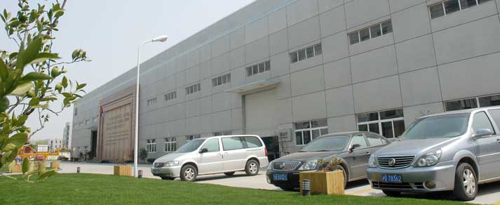

Shanghai Shibang headquarters

You can contact our head-office directly, also you can contact the oversea-offices which is near you. Of course, fre e live-chat is available and you can get help immediately.
- Tel.: +86-21-58386189, 58386176
- Fax: +86-21-58386211 Office
- Add: No.416 Jianye Road, South Jinqiao Area,Pudong New Area, Shanghai, China.
- Postcode: 201201
- E-mail: sbm@atruesmilefoundation.com
Map location